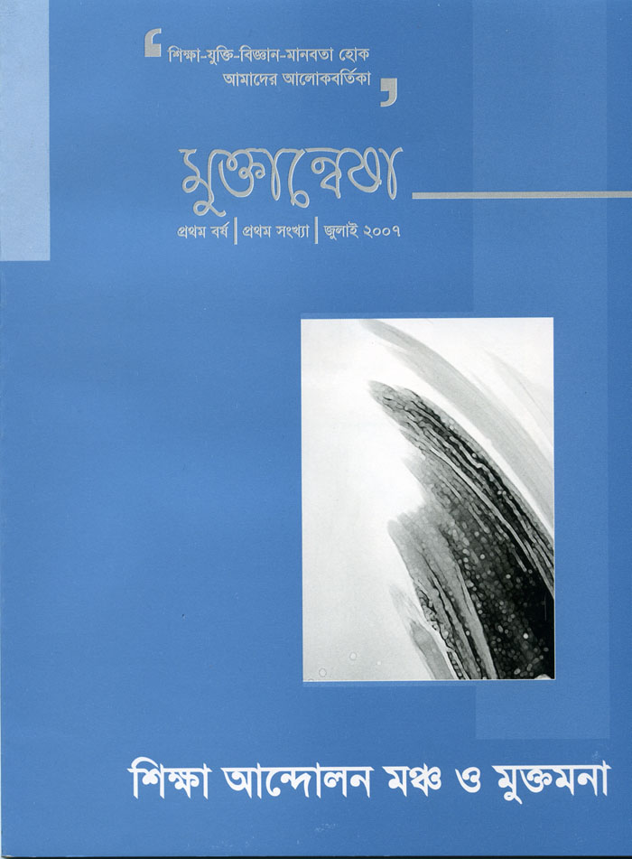

|
|
শিক্ষা আন্দোলন মঞ্চ ও মুক্তমনার নিবেদন
মুক্তান্বেষা (প্রথম বর্ষ, প্রথম সংখ্যা)

মুক্তান্বেষা নামের
ত্রৈমাসিক পত্রিকাটি শিক্ষা আন্দোলন মঞ্চ এবং মুক্তমনার একটি যৌথ
প্রয়াস। ঢাকার সেগুনবাগিচা থেকে প্রকাশিত পত্রিকাটির লক্ষ্য হচ্ছে
সমাজে যুক্তিবাদ, বিজ্ঞানমনস্কতা এবং মানবকল্যানবোধ প্রতিষ্ঠা।
পত্রিকাটির ব্যাপক প্রচার কালক্রমে বাংলাদেশের ক্ষয়িষ্ণু
মুক্তবুদ্ধির চর্চাকে ত্বরান্বিত, প্রসারিত এবং পুনঃপ্রতিষ্ঠিত
করবে বলে আমরা ধারণা করি। পত্রিকাটির মর্মবানী
'শিক্ষা-যুক্তি-বিজ্ঞান-মানবতা হোক আমাদের আলোকবর্তিকা' -
হয়ত অনেককেই বিশের দশকের প্রগতিশীল শিখা গোষ্ঠির কথা স্মরণ করিয়ে
দিবে। ২০০৭ সালের জুলাই মাসে
মুক্তান্বেষার প্রথম বর্ষ, প্রথম সংখ্যা প্রকাশিত হওয়ার
নিমেষ মধ্যে এর প্রথম সংস্করণ নিঃশেষিত হয়ে যায় । পাঠকদের
দীর্ঘদিনের দাবীর সাথে সহমত পোষণ করে মুক্তান্বেষার প্রথম বর্ষ, প্রথম
সংখ্যাকে অনলাইন ইবুকে পরিণত করা হল।
মুক্তান্বেষার দ্বিতীয় সংখ্যা বাজারে
বেরিয়েছে। ২য় সংখ্যা সংক্রান্ত তথ্যাবলী পাওয়া যাবে
এখানে।
সূচী
সম্পাদকীয়
প্রবন্ধ
গল্প
কবিতা
আমাদের
সংগ্রাম চলবেই
বইয়ের জগতে
মুক্তান্বেষা
(প্রথম বর্ষ,
প্রথম সংখ্যা):
যোগাযোগ
– সাইফুর রহমান তপন, ৬/৭, সেগুনবাগিচা; বি/৬, ডোমিনো এল্ডোরাডো, ঢাকা – ১০০০, টেলিফোনঃ
৬৬৬৮৬৪০৪৭১।
-
মুক্তান্বেষায়
লেখা কিংবা প্রতিক্রিয়া পাঠানোর জন্য
tapan@spb.org.bd,
অথবা
muktanwesa@yahoo.com
-এ দুটি ইমেইল
ব্যবহার করুন অথবা ডাকযোগে উপরের ঠিকানায় (৬/৭, সেগুনবাগিচা; বি/৬, ডোমিনো এল্ডোরাডো, ঢাকা
– ১০০০,
বাংলাদেশ) লেখা পাঠান।
|
|
|